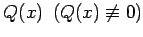
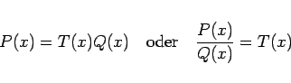
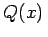
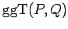
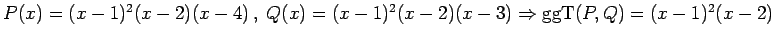
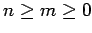
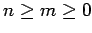
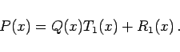
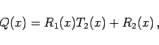

Das Polynome P(x) ist durch das Polynom  teilbar, wenn ein Polynom T(x) existiert, so daß
|  | (1.44) |
gilt. Ist P(x) durch Q(x) teilbar, so heißt Q(x) Teiler von P(x), und P(x) heißt Vielfaches von .
Jedes Polynom, das gemeinsamer Teiler der Polynome P(x) und Q(x) ist und gleichzeitig Vielfaches jedes anderen gemeinsamen Teilers dieser beiden Polynome, heißt größter gemeinsamer Teiler  der Polynome P(x) und .
| Beispiel |
|
. |
Wenn P(x) und Q(x) keine gemeinsamen Polynomfaktoren besitzen, dann nennt man sie teilerfremd. Ihr größter gemeinsamer Teiler ist dann eine Konstante.
Der EUKLIDische Algorithmus ist eine Methode zur Bestimmung des größten gemeinsamen Teilers zweier Polynome P(x) und . P(x) sei vom Grade  , Q(x) sei vom Grade
, Q(x) sei vom Grade  , und es gelte . Dann führt man die folgenden Divisionen durch:
, und es gelte . Dann führt man die folgenden Divisionen durch:
|  | (1.45a) |
|  | (1.45b) |